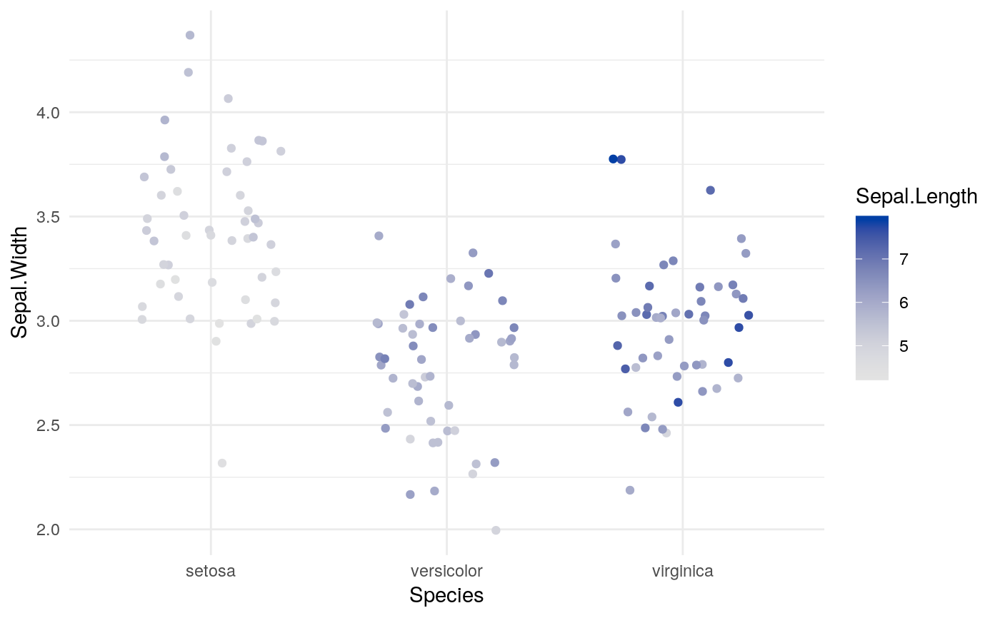
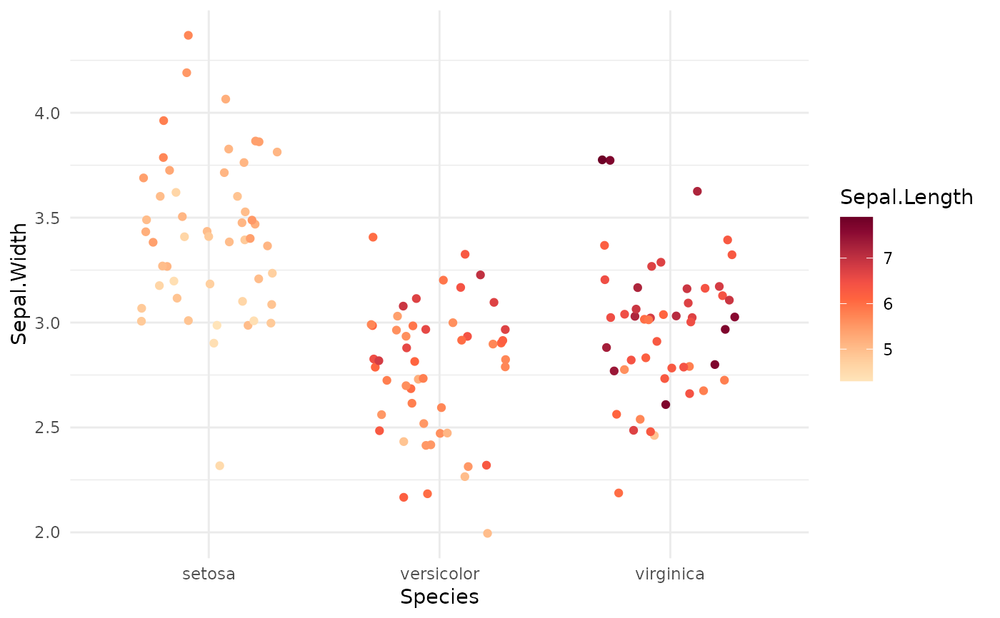
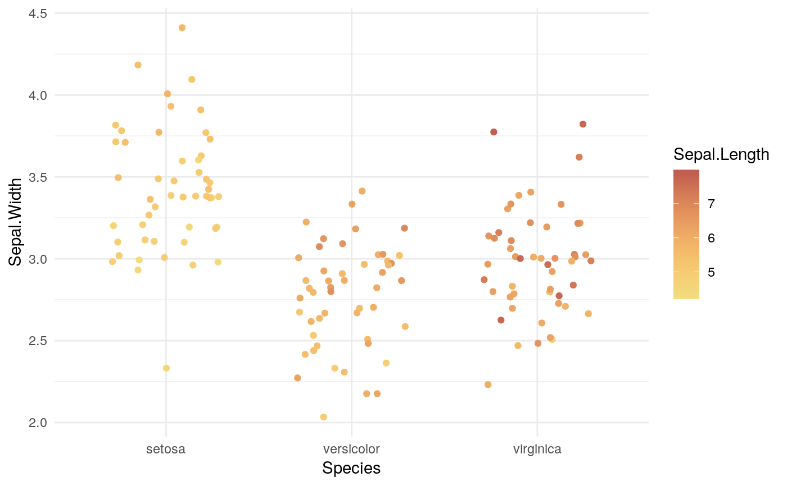
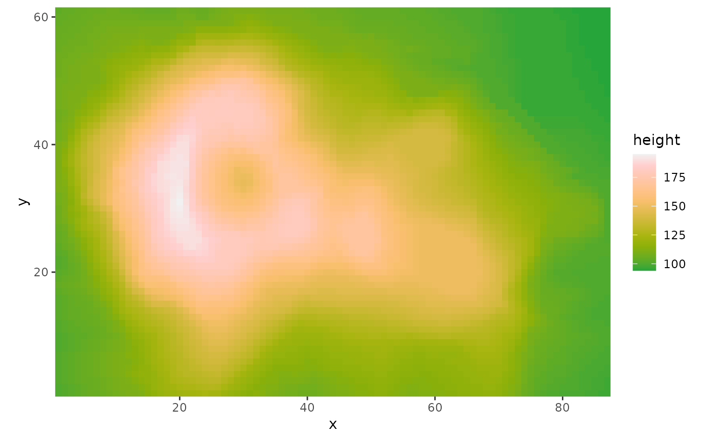

scale_colour_continuous_sequential.RdContinuous ggplot2 color scales using the color palettes generated by sequential_hcl.
scale_colour_continuous_sequential( palette = NULL, c1 = NULL, c2 = NULL, cmax = NULL, l1 = NULL, l2 = NULL, h1 = NULL, h2 = NULL, p1 = NULL, p2 = NULL, alpha = 1, rev = TRUE, begin = 0, end = 1, na.value = "grey50", guide = "colourbar", aesthetics = "colour", n_interp = 11, ... ) scale_color_continuous_sequential( palette = NULL, c1 = NULL, c2 = NULL, cmax = NULL, l1 = NULL, l2 = NULL, h1 = NULL, h2 = NULL, p1 = NULL, p2 = NULL, alpha = 1, rev = TRUE, begin = 0, end = 1, na.value = "grey50", guide = "colourbar", aesthetics = "colour", n_interp = 11, ... ) scale_fill_continuous_sequential(..., aesthetics = "fill")
| palette | The name of the palette to be used. Run |
|---|---|
| c1 | Beginning chroma value. |
| c2 | Ending chroma value. |
| cmax | Maximum chroma value. |
| l1 | Beginning luminance value. |
| l2 | Ending luminance value. |
| h1 | Beginning hue value. |
| h2 | Ending hue value. If set to |
| p1 | Control parameter determining how chroma should vary (1 = linear, 2 = quadratic, etc.). |
| p2 | Control parameter determining how luminance should vary (1 = linear, 2 = quadratic, etc.). |
| alpha | Numeric vector of values in the range |
| rev | If |
| begin | Number in the range of |
| end | Number in the range of |
| na.value | Color to be used for missing data points. |
| guide | Type of legend. Use |
| aesthetics | The ggplot2 aesthetics to which this scale should be applied. |
| n_interp | Number of discrete colors that should be used to interpolate the continuous color scale. 11 will work fine in most cases. |
| ... | common continuous scale parameters: `name`, `breaks`, `labels`, and `limits`. See
|
If both a valid palette name and palette parameters are provided then the provided palette parameters overwrite the parameters in the named palette. This enables easy customization of named palettes.
Compared to sequential_hcl the ordering of the colors in the sequential ggplot2 scale
are reversed by default (i.e., rev = TRUE) to be more consistent with ggplot2's own scales such as
scale_color_brewer. For most named palettes this leads to darker and more
colorful colors for larger values on the scale. This is typically the better default on light/white
backgrounds.
library("ggplot2") # base plot gg <- ggplot(iris, aes(x = Species, y = Sepal.Width, color = Sepal.Length)) + geom_jitter(width = 0.3) + theme_minimal() # default settings gg + scale_color_continuous_sequential()# switch palette and overwrite some default values gg + scale_color_continuous_sequential(palette = "Reds", l1 = 20, c2 = 70, p1 = 1)# select a range out of the entire palette gg + scale_color_continuous_sequential(palette = "Heat", begin = 0.2, end = 0.8)# volcano plot df <- data.frame(height = c(volcano), x = c(row(volcano)), y = c(col(volcano))) ggplot(df, aes(x, y, fill = height)) + geom_raster() + scale_fill_continuous_sequential(palette = "Terrain", rev = FALSE) + coord_fixed(expand = FALSE)